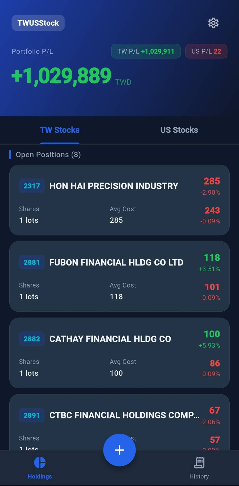
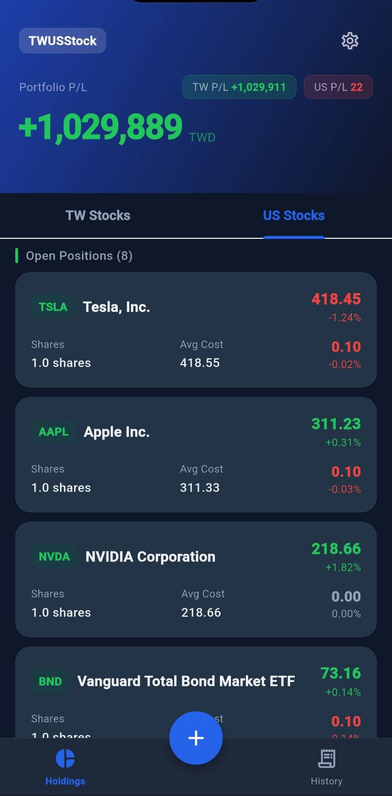
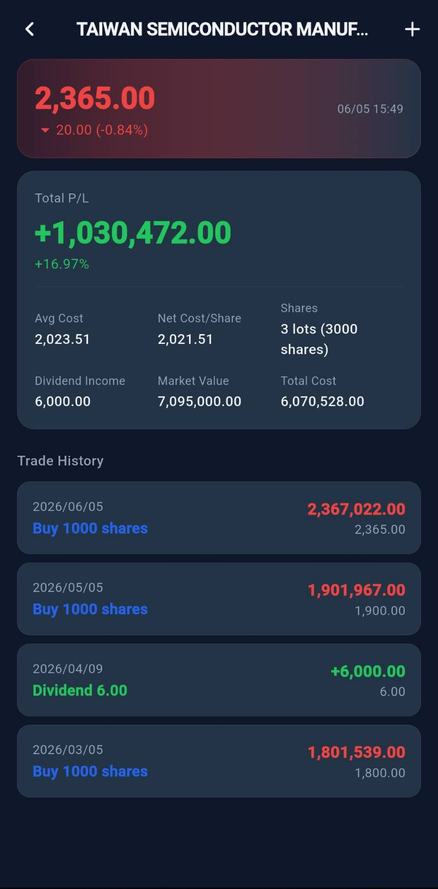
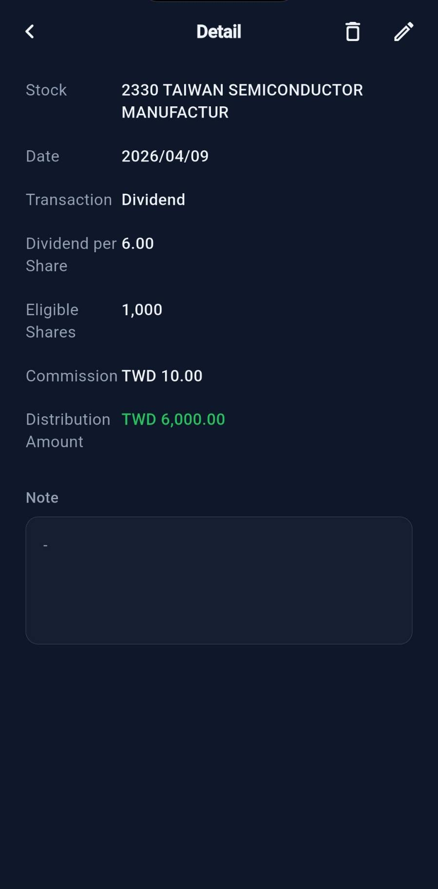
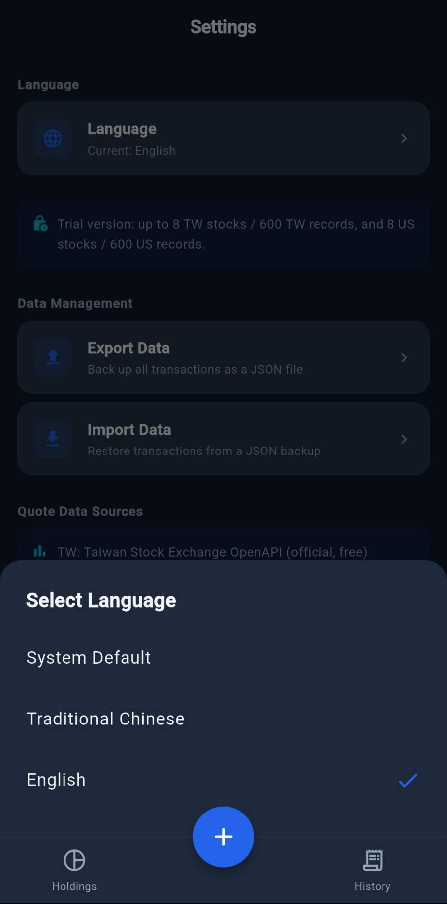

Dual-Market Records
Keep Taiwan and US stock records separate while tracking both markets in one app.
 Ooniau Studio
Ooniau Studio
Local-first tools for personal records
We build clear, practical tools that respect user data ownership. TWUSStock helps personal investors organize Taiwan and US stock transaction records on their own devices.
Software Promotion
TWUSStock is a local bookkeeping app for personal Taiwan and US stock portfolio records. It helps users organize transactions, dividends, cost basis, profit and loss, and current holdings. It does not provide trading, order placement, investment advice, or asset custody services.
Keep Taiwan and US stock records separate while tracking both markets in one app.
Transaction records are primarily stored on the user's device, not uploaded to Ooniau Studio.
Export JSON backups and restore transaction records from user-selected backup files.
Use public quote and exchange-rate sources for lookup. Data may be delayed or incomplete.
App Screenshots
The app uses a focused dark interface for scanning holdings, checking individual stock details, reviewing transaction records, and managing local backups.





Privacy Policy Summary
TWUSStock does not create user accounts, does not include advertising SDKs, and does not intentionally upload transaction records to Ooniau Studio. Transaction records, notes, and settings are primarily stored on the user's device.
Full Privacy Policy
Effective date: 2026-06-05
TWUSStock stores stock transaction records and app settings locally on your device. Transaction records may include ticker, market, date, transaction type, price, shares, commission, tax, exchange rate, and notes. App settings may include language preference. Ooniau Studio does not operate an app server for TWUSStock and does not receive or store your transaction records.
TWUSStock uses internet access to look up stock quotes, stock names, and exchange rates. Depending on the feature, the app may send ticker symbols, search text, or quote requests to third-party data sources such as Taiwan Stock Exchange OpenAPI, Taipei Exchange OpenAPI, Yahoo Finance, and Bank of Taiwan exchange-rate services.
TWUSStock lets users export local transaction records as a JSON backup file and import records from a JSON file. Exported files may contain financial information entered into the app. Users are responsible for storing, sharing, and deleting exported backup files safely.
Ooniau Studio does not sell personal or sensitive data. TWUSStock does not include advertising SDKs and does not intentionally share local transaction records with Ooniau Studio. The app may interact with third-party quote and exchange-rate services when users use lookup features.
TWUSStock stores app data locally and disables Android cloud backup and device-transfer backup for app database, shared preferences, and app files. Network requests use HTTPS endpoints and Android cleartext traffic is disabled. No storage or transmission method is perfectly secure.
Transaction records remain on the device until users delete them, clear app storage, uninstall the app, or add or overwrite data through import. Exported backup files remain wherever users save them until deleted by the user. TWUSStock does not create user accounts, so there is no account deletion flow.
TWUSStock is not designed for children and is not directed to users under 13.
Ooniau Studio may update this policy when app features, data practices, or legal requirements change. For privacy questions, contact Ooniau Studio using the developer contact email shown on the Google Play store listing.
TWUSStock is a bookkeeping and reference tool. It does not provide investment, tax, accounting, legal, or financial advice. Market prices, exchange rates, calculations, and charts may be delayed, unavailable, or inaccurate. Users are responsible for verifying information and making their own investment decisions.
TWUSStock uses internet access for public quote, stock-name, and exchange-rate lookup. It does not provide trading, payment, lending, cryptocurrency wallet, or asset custody services, and does not use location, contacts, camera, SMS, microphone, or phone permissions.
Contact
For questions about TWUSStock, privacy, or data handling, contact Ooniau Studio using the developer contact email shown on the Google Play store listing.